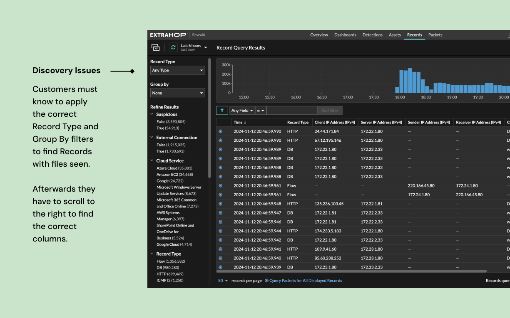
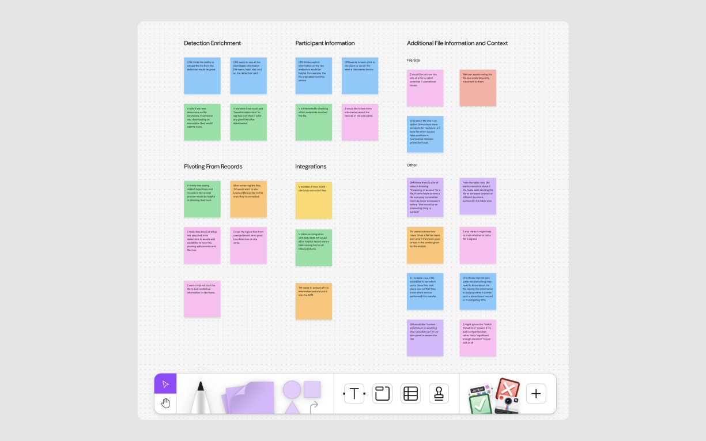
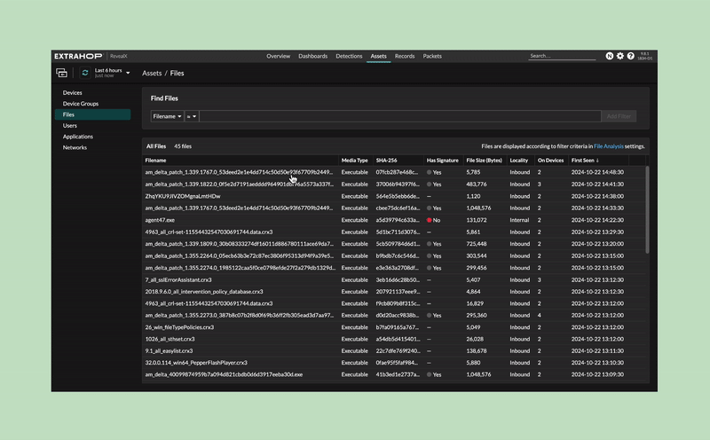
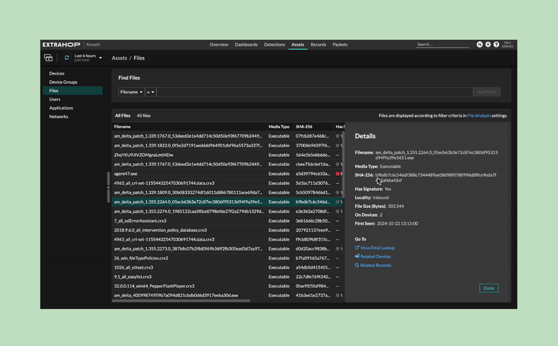
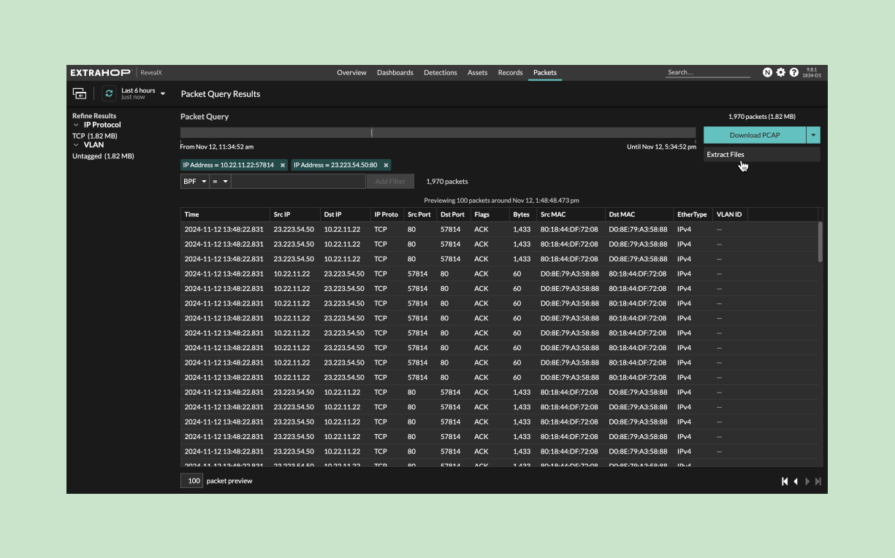

As part of a strategic investment to expand ExtraHop’s security capabilities, I led the research and designs for a 0 → 1 feature that gives customers visibility into the suspicious files on their network.
There are several types of security solutions: Network Detection and Response (NDR), Endpoint Detection and Response (EDR), Security Information and Event Management (SIEM), and Security Orchestration, Automation and Response (SOAR).
ExtraHop is a NDR platform that helps organizations monitor and analyze their network traffic for security threats and anomalies.
While ExtraHop alerts customers of security threats, its capabilities fall short when it comes to detailed file analysis. Within the Records page (where customers see snapshots of network events), customers can see limited metadata about a file transfer - the filename, the devices or IP addresses that sent it, the protocols over how it was sent. However, the current file metadata is not easily discoverable. To be able to find these records, customers need to know what to search by and the specific name of the files.

“We would like the ability to read tags [inside of documents to identify the type of file] and track where sensitive data is going on the network. With Zero Trust Mandates for tagging this would be an important part of visibility and receiving from breaches. For example we could tell them how many sensitive files left the network.”
Customers have expressed a need for enhanced visibility into files, including their contents and potential risks, such as malware, ransomware, and insider threats. Within ExtraHop, they aren’t able to see the file contents or check the files against any malicious indicators. Our competitors offer comprehensive coverage against file-based threats, which poses a risk of losing customers if we don’t address this gap.
From the business and product perspective we want to understand customer use cases and concerns regarding file-based threats and develop the product strategy for a new file based feature.
There were many product directions that we could take:
A new proactive file carving feature that enables customers to specify which files are automatically downloaded to their resource constrained systems
A new files table that provides insights into who accessed which files when
Improvements to existing pages so that it’s more suited for files investigations
How might we create a file analysis feature that empowers users to identify file activity across their network?
To navigate the ambiguous problem space, I led 13 customer sessions and spoke with individuals whose roles included cybersecurity engineer, incident response team member, and threat hunter to understand customers’ file analysis toolset and processes today and gaps and opportunities for ExtraHop.

Nearly all the customers have some sort of tool with file analysis capabilities.
Customers talked about using file analysis primarily for malware detection and hunting and data loss prevention.
File carving is not a common action among the customers.
As an analyst, I have a file of interest.
I want to make a determination on the file. Is it benign or malicious? I want to check the file against threat intel lookup platforms. If the file is determined to be malicious, I want to send the file to my sandbox tool for analysis.
As an analyst, I have a file hash.
I want to check the file hash against my threat intel tools to make a determination on the file. I want to search the malicious hash on all platforms to see the scope of the file activity.
As a threat hunter, I am looking for unusual files or events.
I don’t have a particular file or hash in mind but I want to search for possible files and events of interest.
Guided by our research findings, we established key product opportunities:
Customers believe that ExtraHop could cover gaps and see files or file movements not detected by their existing tools.
Customers imagine using ExtraHop to reverse engineer a situation to understand where the file originally came from.
Customers talked about how it’s important to grab files for investigation and response and described situations where files have been no longer accessible.
Based on the insights gained and the principles defined, we developed the File Investigation View, which includes:

Customers have an investigative workspace to build timelines for file activity and search for file hashes.

File hashes are checked against a trusted source of indicators of compromise (IOC) lists. Customers can check against their own file hash lists.

Customers can safely extract files, check the content of the file, and send the file to my sandbox tool for further analysis.
By focusing on user-centered design and addressing the specific needs of analysts and threat hunters, we have developed a solution that enhances ExtraHop’s capabilities in file threat detection. Our approach not only strengthens our competitive position but also provides our customers with the critical tools they need to safeguard their organizations against file-based threats. As we move forward, ongoing user feedback and data analytics will be crucial to refining our features and ensuring they continue to meet evolving security challenges.
We established key metrics to evaluate the effectiveness of the File Investigation View: feature usage (tracking page visits and interactions with the file-centric features) and MTTI (monitoring the average time it takes for customers to close a detection related to file threats). The team is currently rolling out the new file based features, more details to come!